충무로 / 2009
 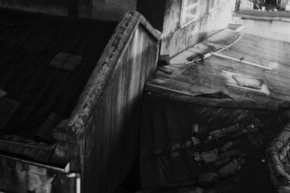
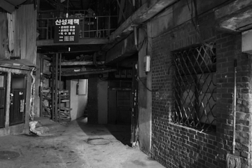
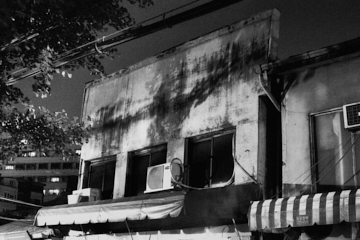
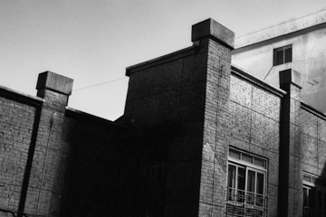
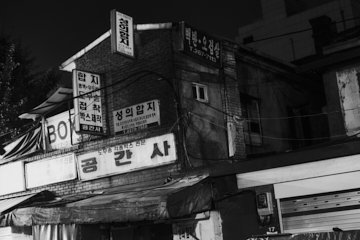
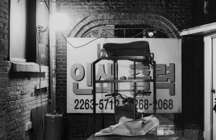
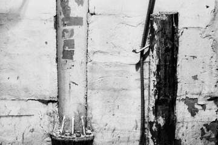
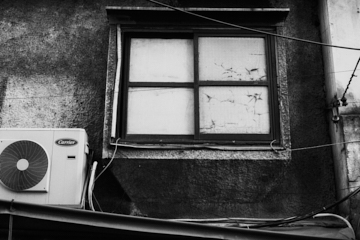
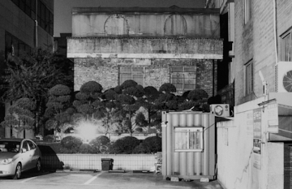
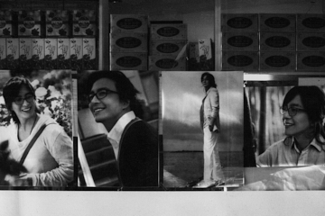
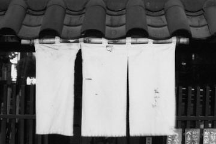
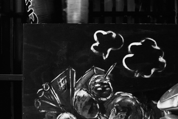
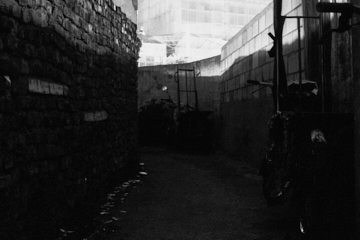
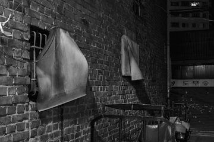
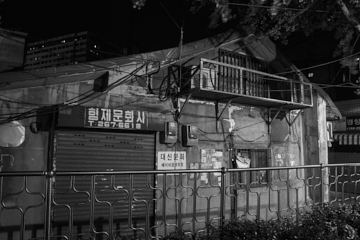
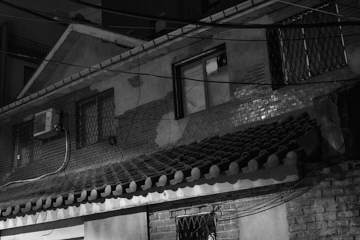
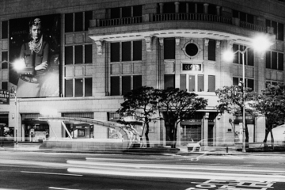
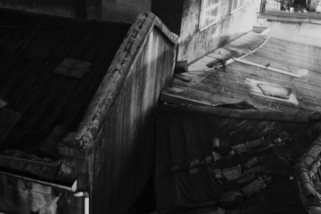
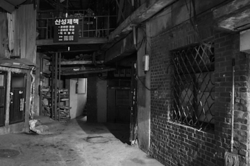
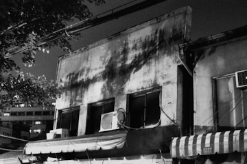
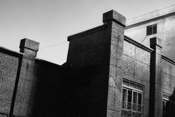
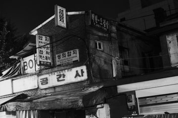
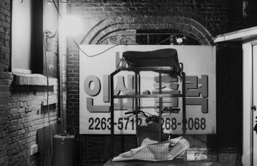
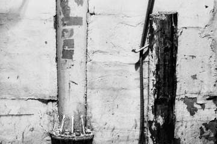
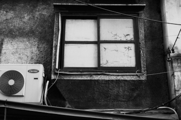
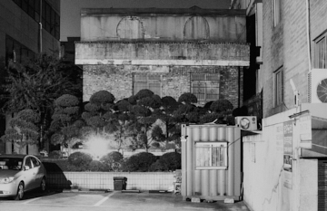
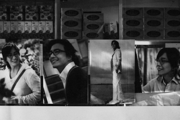
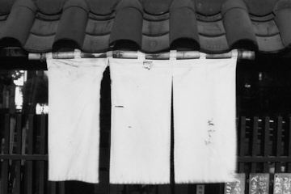
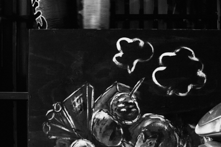
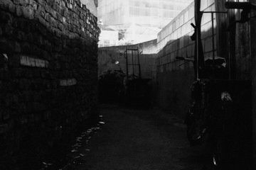
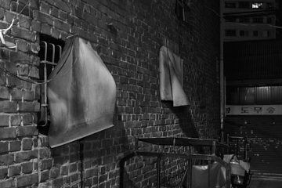
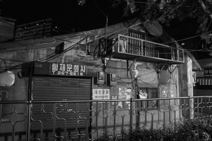
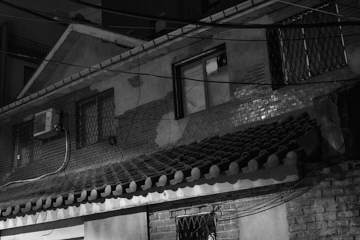
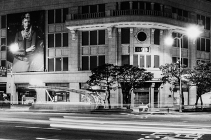
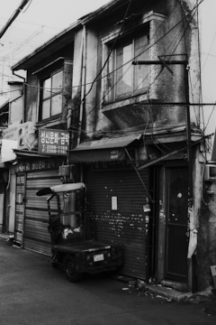
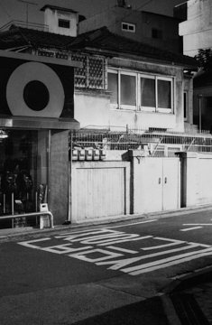
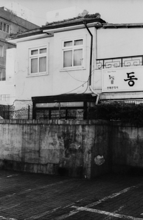
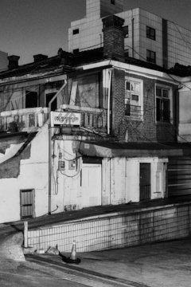
충무로의 옛 이름은 진고개이다. 교통과 군사의 요충지였다. 한동안 지명변경의 시기를 잘못 알고 있었다. 당연히 광복 후의 일이라 생각했지만 일제의 행정개편 중 한 부분이었다.
일본의 군국주의를 미화하기 위한 의도로 이순신 장군의 시호를 이용했다. 역설적이다. 이곳은 일본인들의 거주 중심지이자 상권이었다.
패전 후에 그들은 집을 두고 떠났고 이것을 적산가옥이라 부른다. 한 동안 ‘주인 없는 집’이었고 후에 국가로부터 민간으로 양도되었다. 이 과정에서 잡음이 많았다고 한다. 친일파들이 재산증식에 이용했기 때문이다. 불법과 합법을 가리지 않는다. 뿌리 깊은 속임수와 두꺼운 낯짝으로 경제 권력을 유지했고 대물림했다.
세대를 지나면서 과거는 희미해지고 건물은 개보수를 거치며 변화했다. 자연스럽게 생활 속에 안착했다. 언뜻 비치는 일본풍의 생경한 건물을 볼 때나 극히 일부만 남은 옛 기둥을 볼 때, 그것은 아픈 과거의 흔적이 아닌 막연한 근대의 정취로 남는다.
그들은 결코 이곳을 떠나지 않았다. 온전하게 공존한다. 명동의 밤거리, 배용준의 미소가 나를 향한 것이 아님은 분명하다. 그래서 친근하지만 않다.
참고
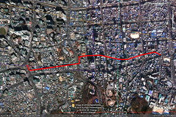- 없음